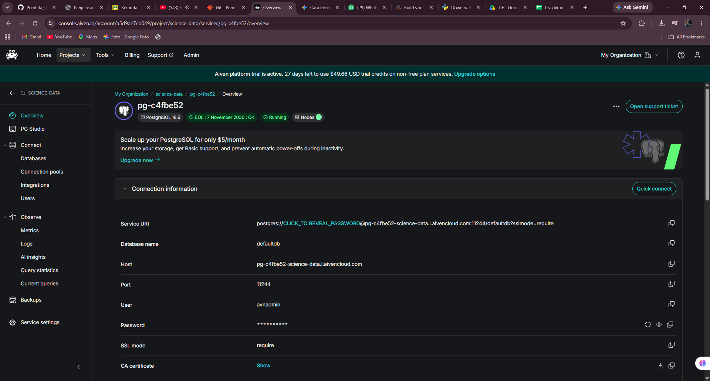
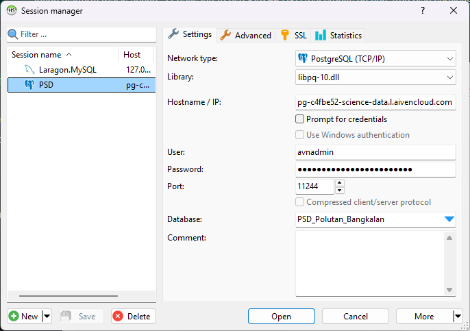
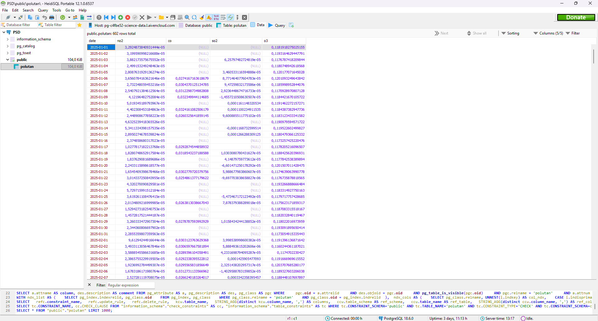
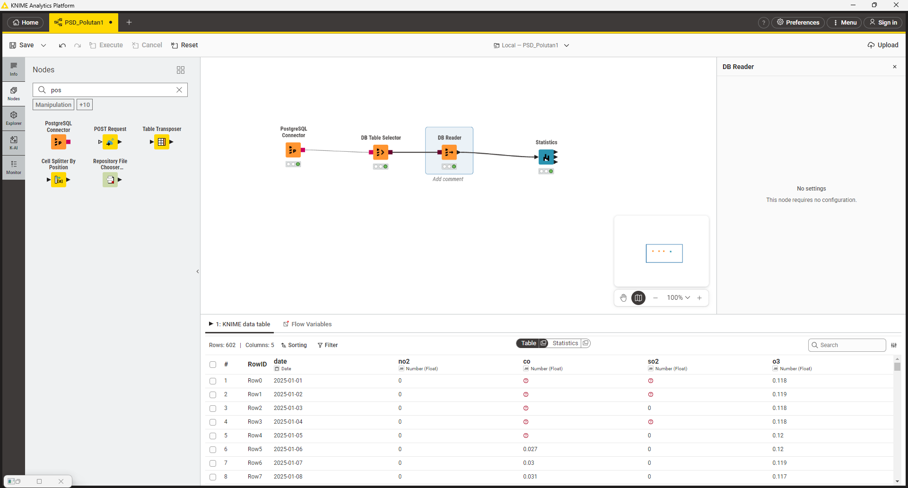
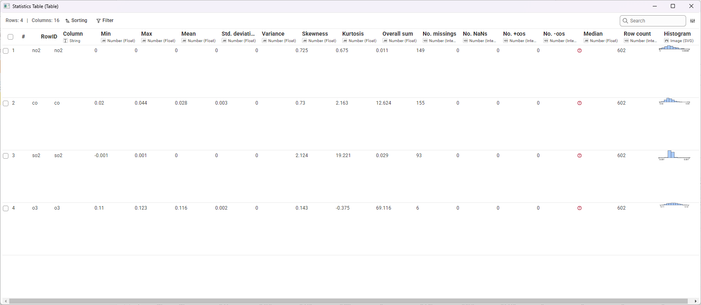

Penjelasan Metrik Statistika Deskriptif#
Dalam analisis data, ringkasan metrik yang ditampilkan pada tabel disebut sebagai Statistika Deskriptif (Descriptive Statistics). Hasil ini biasanya digunakan pada tahap awal analisis, yaitu Exploratory Data Analysis (EDA), untuk memahami karakteristik, distribusi, dan kualitas data sebelum dilakukan pemrosesan lebih lanjut, peramalan (forecasting), atau pemodelan.
Tabel tersebut menampilkan ringkasan untuk beberapa variabel konsentrasi polutan udara (\(NO_2\), \(CO\), \(SO_2\), \(O_3\)). Berikut adalah penjelasan masing-masing metrik beserta cara perhitungan manualnya:
1. Min & Max#
Penjelasan: Nilai observasi terendah (Min) dan tertinggi (Max) dalam satu set data. Metrik ini digunakan untuk melihat batas bawah dan batas atas rentang data.
Perhitungan Manual: Urutkan seluruh data dari nilai terkecil hingga terbesar.
\(Min = X_1\) (Data urutan pertama)
\(Max = X_n\) (Data urutan terakhir)
2. Mean#
Penjelasan: Nilai pusat dari kumpulan data, dihitung dengan menjumlahkan semua observasi lalu membaginya dengan jumlah total observasi yang valid.
Perhitungan Manual: $\( \bar{x} = \frac{\sum_{i=1}^{n} x_i}{n} \)$ (Jumlahkan seluruh nilai konsentrasi polutan, kemudian bagi dengan total baris data yang ada).
3. Std. Deviation#
Penjelasan: Mengukur seberapa jauh rata-rata penyimpangan titik-titik data terhadap nilai Mean-nya. Standar deviasi yang rendah menunjukkan data mengelompok dekat dengan rata-rata (konsisten), sedangkan nilai yang tinggi menunjukkan rentang fluktuasi yang besar.
Perhitungan Manual (Sampel): $\( s = \sqrt{\frac{\sum_{i=1}^{n} (x_i - \bar{x})^2}{n-1}} \)$
4. Variance#
Penjelasan: Rata-rata dari kuadrat selisih masing-masing titik data dengan nilai Mean. Varians secara matematis adalah kuadrat dari nilai Standar Deviasi.
Perhitungan Manual (Sampel): $\( s^2 = \frac{\sum_{i=1}^{n} (x_i - \bar{x})^2}{n-1} \)$
5. Skewness#
Penjelasan: Mengukur derajat asimetri (ketidakseimbangan) dari distribusi data terhadap nilai rata-ratanya.
Skewness = 0: Data terdistribusi simetris / normal berpusat di tengah.
Skewness > 0 (Positif): Ekor grafik memanjang ke kanan (kondisi nilai ekstrem yang tinggi). Contoh pada data observasi \(SO_2\) dengan nilai 2.124.
Skewness < 0 (Negatif): Ekor grafik memanjang ke kiri.
Perhitungan Manual (Fisher-Pearson): $\( Skewness = \frac{n}{(n-1)(n-2)} \sum_{i=1}^{n} \left(\frac{x_i - \bar{x}}{s}\right)^3 \)$
6. Kurtosis#
Penjelasan: Mengukur tingkat “keruncingan” atau bobot ekor dari distribusi data (tailedness). Menunjukkan seberapa ekstrem outlier dalam data. Sebagian besar software secara spesifik mengukur Excess Kurtosis.
Kurtosis ≈ 0: Normal (Mesokurtik).
Kurtosis > 0: Puncak tajam dengan ekor tebal yang menandakan banyak outlier ekstrem tinggi atau rendah (Leptokurtik). Contoh ekstrem: data \(SO_2\) (19.221).
Kurtosis < 0: Puncak cenderung lebih datar dari distribusi normal (Platikurtik). Contoh: data \(O_3\) (-0.375).
Perhitungan Manual (Excess Kurtosis Sampel): $\( Kurtosis = \left[ \frac{n(n+1)}{(n-1)(n-2)(n-3)} \sum \left(\frac{x_i - \bar{x}}{s}\right)^4 \right] - \frac{3(n-1)^2}{(n-2)(n-3)} \)$
7. Overall Sum#
Penjelasan: Jumlah total akumulasi dari seluruh nilai dalam variabel tersebut.
Perhitungan Manual: $\( Sum = \sum_{i=1}^{n} x_i \)$
8. Metrik Kualitas / Anomali Data#
Kumpulan metrik ini sangat penting saat melakukan penarikan data mentah via API atau dari citra satelit, karena sangat rentan terhadap kegagalan perekaman nilai.
No. missings: Jumlah sel kosong (NULL / NA) akibat data tidak terekam pada rentang waktu tertentu.
No. NaNs (Not a Number): Jumlah entri yang terbaca namun tidak terdefinisi secara matematis (seperti 0/0).
No. +infs / No. -infs: Nilai batas tak terhingga.
Perhitungan Manual: Menghitung frekuensi baris (N) yang mengandung nilai khusus tersebut.
9. Median#
Catatan: Pada tabel di atas, nilai Median belum dikomputasi secara utuh (ditandai dengan icon tanda tanya merah).
Penjelasan: Nilai yang tepat berada di tengah set data setelah diurutkan. Metrik ini sering digunakan sebagai alternatif dari rata-rata (Mean) karena Median tidak terpengaruh oleh keberadaan nilai outlier yang ekstrem.
Perhitungan Manual: Urutkan seluruh data dari \(X_1\) sampai \(X_n\).
Jika jumlah observasi (\(n\)) ganjil: \(Median = X_{(n+1)/2}\)
Jika jumlah observasi (\(n\)) genap: \(Median = \frac{X_{n/2} + X_{(n/2)+1}}{2}\)
Implementasi Analisis Data Polutan: Dari Cloud Database ke KNIME#
Panduan ini menjelaskan urutan langkah untuk menghubungkan database PostgreSQL di Aiven, menginspeksi data menggunakan HeidiSQL, dan mengekstraksi metrik statistika deskriptif menggunakan KNIME Analytics Platform.
Langkah 1: Mengambil Kredensial Database dari Aiven#
Sebelum melakukan koneksi dari aplikasi manapun, Anda memerlukan informasi kredensial server.
Buka dashboard atau console Aiven dan arahkan ke proyek Anda.
Buka tab Overview pada service PostgreSQL yang sedang berjalan (
pg-c4fbe52).Pada bagian Connection information, catat parameter berikut:
Host:
pg-c4fbe52-science-data.l.aivencloud.comPort:
11244User:
avnadminPassword: (Klik ikon mata atau copy untuk menyalin password rahasia Anda)
SSL mode:
require
Pastikan Anda mengunduh sertifikat SSL (klik Show pada CA certificate lalu unduh) jika client yang Anda gunakan mewajibkannya.

Langkah 2: Konfigurasi Koneksi di HeidiSQL#
HeidiSQL digunakan untuk menginspeksi tabel dan data secara langsung sebelum diproses.
Buka aplikasi HeidiSQL dan klik tombol New untuk membuat sesi baru (misalnya dinamakan
PSD).Pada tab Settings, lakukan konfigurasi berikut:
Network type: Pilih
PostgreSQL (TCP/IP).Library: Pilih
libpq-10.dll(atau varianlibpq.dlllainnya).Hostname / IP: Masukkan Host dari langkah 1.
User: Masukkan
avnadmin.Password: Paste password dari langkah 1.
Port: Masukkan
11244.Database: Ketikkan nama database spesifik yang ingin diakses, yaitu
PSD_Polutan_Bangkalan.
Klik Save untuk menyimpan konfigurasi, lalu klik Open untuk menyambungkan.

Langkah 3: Inspeksi Tabel Data di HeidiSQL#
Setelah koneksi berhasil, Anda perlu memastikan data mentah sudah tersedia dan formatnya sesuai.
Di panel sebelah kiri HeidiSQL, buka tree database
PSD_Polutan_Bangkalan> skemapublic> tabelpolutan.Klik pada tab Data di sebelah kanan.
Pastikan kolom-kolom data deret waktu (time-series) muncul dengan benar, yaitu kolom
date,no2,co,so2, dano3.Perhatikan bahwa pada tahap ini wajar jika terdapat nilai
(NULL)yang nantinya akan terdeteksi sebagai missing values di tahap analisis.

Langkah 4: Membangun Alur Kerja (Workflow) di KNIME#
Beralih ke KNIME Analytics Platform untuk menarik data dari database dan menghitung statistiknya secara otomatis.
Buka KNIME Analytics Platform dan buat workflow baru.
Tarik (drag-and-drop) node berikut dari Node Repository ke workspace:
PostgreSQL Connector: Untuk menghubungkan KNIME ke server Aiven.
DB Table Selector: Untuk memilih tabel di dalam database.
DB Reader: Untuk menarik tabel ke dalam memori KNIME.
Statistics: Untuk menghitung metrik statistik.
Hubungkan antar node sesuai urutan di atas.
Konfigurasi Node:
Klik ganda PostgreSQL Connector, masukkan Hostname, Port, Database name (
PSD_Polutan_Bangkalan), dan Credentials (User & Password) yang sama dengan langkah 1 dan 2.Klik ganda DB Table Selector, pilih skema
publicdan tabelpolutan.
Klik kanan pada DB Reader dan pilih Execute. Jika berhasil, indikator di bawah node akan berwarna hijau.

Langkah 5: Membaca Hasil Statistika Deskriptif#
Setelah data berhasil ditarik ke KNIME, tahap terakhir adalah mengeksekusi perhitungan analitik.
Klik kanan pada node Statistics dan pilih Execute.
Setelah lampu indikator berwarna hijau, klik kanan lagi pada node Statistics dan pilih menu Statistics View (atau ikon kaca pembesar).
Tabel metrik statistik akan terbuka, menampilkan:
Min, Max, Mean: Untuk melihat rentang dan nilai rata-rata tiap polutan.
Std. deviation & Variance: Untuk melihat tingkat fluktuasi nilai gas di udara.
Skewness & Kurtosis: Untuk melihat asimetri dan tingkat keberadaan nilai ekstrem (outlier).
No. missings: Jumlah data yang kosong (seperti pada gas \(CO\) yang memiliki 155 data kosong).
Histogram: Visualisasi sebaran datanya.

Perhitungan Manual — Kolom O3#
Perhitungan manual di bawah ini menggunakan kolom O3 dari file Polutan_Bangkalan.csv sebagai patokan.
Data dasar:
Total baris = 602
Missing values = 6
n = total baris − missing values = 602 − 6 = 596
Rata-rata (x̄) = 0.1159662821
1. Standar Deviasi#
dimana:
\(x_i\) adalah data ke-\(i\)
\(\bar{x}\) adalah rata-rata dari \(x\)
\(n\) adalah jumlah baris (dikarenakan terdapat missing values, \(n = total\,baris - missing\,values\))
2. Variansi#
Variansi dapat diketahui dengan mengkuadratkan Standar Deviasi.
3. Skewness#
Rumus di atas dapat dikelompokkan menjadi 2 bagian untuk mempermudah perhitungan:
4. Kurtosis#
Rumus di atas dapat dikelompokkan menjadi 3 bagian:
5. Overall Sum#
Overall Sum adalah jumlah keseluruhan / total dari seluruh nilai angka dalam suatu kumpulan data.
Ringkasan Perbandingan dengan KNIME#
Metrik |
Perhitungan Manual |
Hasil KNIME |
|---|---|---|
Std. Deviation |
0.0022597837 |
0.00225978378 |
Variance |
5.10662E-06 |
5.10662274111331E-06 |
Skewness |
0.142866 |
0.143 |
Kurtosis |
-0.374977 |
-0.375 |
Overall Sum |
69.115904 |
69.116 |
Hasil perhitungan manual sudah sangat mendekati hasil dari KNIME (selisih hanya pada digit desimal terakhir, wajar karena pembulatan pada tiap tahap perhitungan).